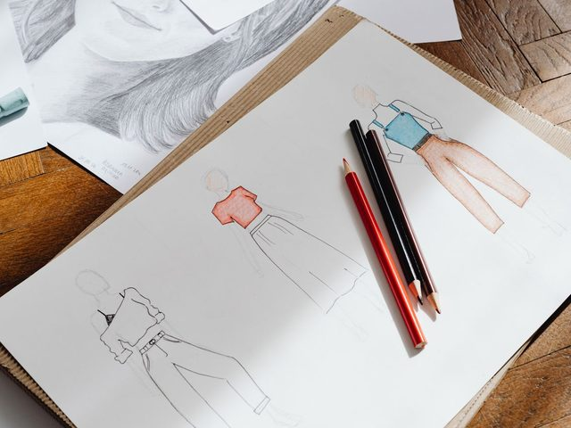
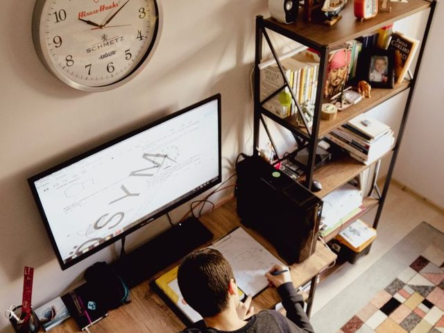
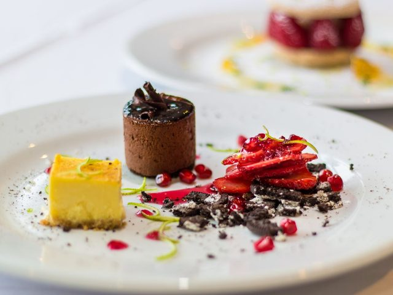
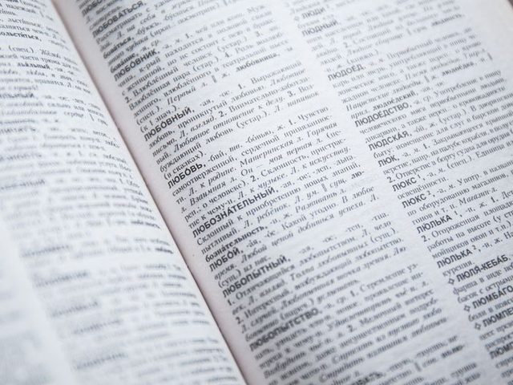
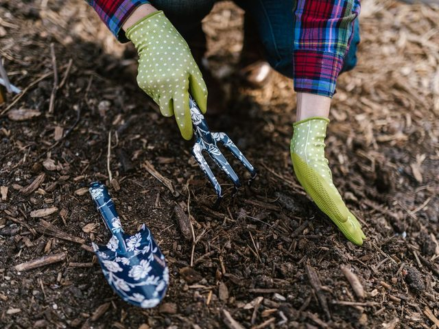
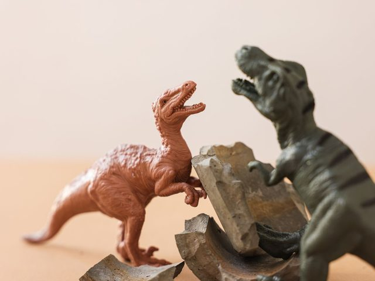
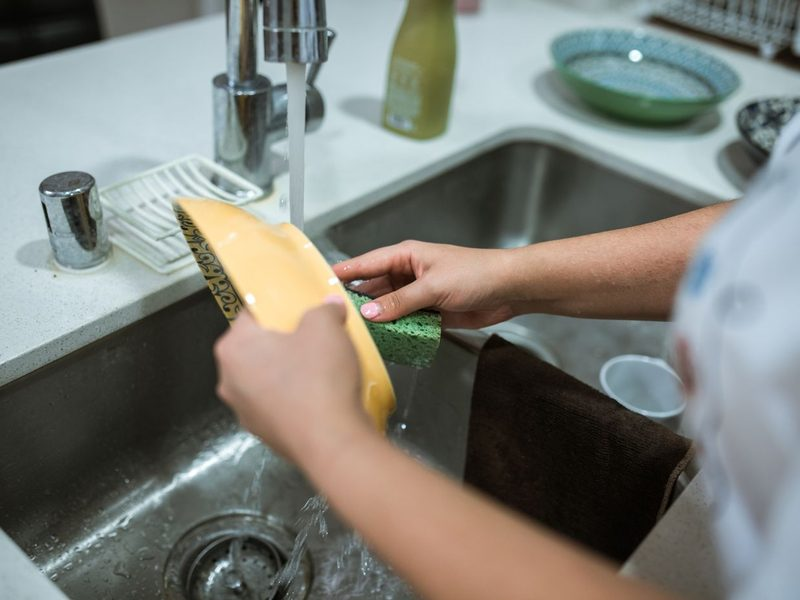

UNIT 14 · VOCABULARY
D 開頭（二）
D-II
38 個單字聽・唸・用
本單元單字一覽
WORD UP「D-II」的 38 個字（design 到 document）。紅色＝要複習，藍色標籤＝WORD UP 標熟記、還要在這裡考對。
designdesiredeskdessertdeterminedevelopdialdiamonddiarydictionarydiedietdifferencedifferentdifficultdifficultydigdiligentdinnerdinosaurdiplomatdirectdirectiondirectordirtydisappeardiscoverdiscussdiscussiondishdishonestdistancedividedivisiondizzydodoctordocument
每個字都有 🔊，先聽發音、跟著唸，再看例句。
單字 1–4

design
設計v./n.
She designed her own dress.
她自己設計了洋裝。
她自己設計了洋裝。
🔥
desire
渴望；慾望n./v.
He has a strong desire to win.
他非常渴望獲勝。
他非常渴望獲勝。

desk
書桌n.
My books are on the desk.
我的書在書桌上。
我的書在書桌上。

dessert
甜點n.
What's for dessert?
甜點吃什麼？
甜點吃什麼？
單字 5–8
💪
determine
決定；下定決心v.
She is determined to be a doctor.
她下定決心要當醫生。
她下定決心要當醫生。
🌱
develop
發展；培養v.
Reading helps develop your mind.
閱讀幫助發展你的思考。
閱讀幫助發展你的思考。
dial
撥（電話）v.
Dial 119 in an emergency.
緊急時撥 119。
緊急時撥 119。

diamond
鑽石n.
The ring has a small diamond.
那枚戒指有一顆小鑽石。
那枚戒指有一顆小鑽石。
單字 9–12

diary
日記n.
I keep a diary in English.
我用英文寫日記。
我用英文寫日記。

dictionary
字典n.
Look up the word in the dictionary.
在字典裡查這個字。
在字典裡查這個字。
🪦
die
死v.
The plant died because I forgot to water it.
那盆植物死了，因為我忘了澆水。
那盆植物死了，因為我忘了澆水。

diet
飲食；節食n.
Mom is on a diet.
媽媽在節食。
媽媽在節食。
單字 13–16
🔍
difference
差異n.
What's the difference between the two pictures?
這兩張圖有什麼不同？
這兩張圖有什麼不同？
🔀
different
不同的adj.
My answer is different from yours.
我的答案和你的不一樣。
我的答案和你的不一樣。
🧩
difficult
困難的adj.
This math problem is difficult.
這題數學很難。
這題數學很難。
😣
difficulty
困難n.
I have difficulty remembering names.
我很難記住名字。
我很難記住名字。
單字 17–20

dig
挖v.
The dog is digging a hole.
那隻狗在挖洞。
那隻狗在挖洞。
diligent
勤勉的；用功的adj.
She is a diligent student.
她是個用功的學生。
她是個用功的學生。
dinner
晚餐n.
We have dinner at seven.
我們七點吃晚餐。
我們七點吃晚餐。

dinosaur
恐龍n.
Dinosaurs lived millions of years ago.
恐龍生活在幾百萬年前。
恐龍生活在幾百萬年前。
單字 21–24
diplomat
外交官n.
Her father is a diplomat in Japan.
她爸爸是駐日本的外交官。
她爸爸是駐日本的外交官。
➡️
direct
直接的；指揮；導演adj./v.
Is there a direct flight to Paris?
有直飛巴黎的班機嗎？
有直飛巴黎的班機嗎？

direction
方向n.
Which direction is the station?
車站在哪個方向？
車站在哪個方向？
director
導演；主任n.
The director made a great movie.
那位導演拍了一部很棒的電影。
那位導演拍了一部很棒的電影。
單字 25–28
dirty
髒的adj.
Your shoes are dirty.
你的鞋子很髒。
你的鞋子很髒。
🫥
disappear
消失v.
The sun disappeared behind the clouds.
太陽消失在雲後面。
太陽消失在雲後面。
🔭
discover
發現v.
Who discovered America?
誰發現了美洲？
誰發現了美洲？
discuss
討論v.
Let's discuss the plan.
我們來討論計畫吧。
我們來討論計畫吧。
單字 29–32

discussion
討論n.
We had a discussion about the trip.
我們討論了旅行的事。
我們討論了旅行的事。

dish
盤子；菜餚n.
It's my turn to do the dishes.
輪到我洗碗了。
輪到我洗碗了。
🤥
dishonest
不誠實的adj.
It is dishonest to cheat.
作弊是不誠實的。
作弊是不誠實的。
distance
距離n.
We could see the mountains in the distance.
我們可以看到遠方的山。
我們可以看到遠方的山。
單字 33–36
➗
divide
分；除v.
Divide the cake into eight pieces.
把蛋糕切成八塊。
把蛋糕切成八塊。
🔪
division
除法；分配；部門n.
We learned division in math class.
我們數學課學了除法。
我們數學課學了除法。
dizzy
頭暈的adj.
I feel dizzy after the ride.
坐完遊樂設施我覺得頭暈。
坐完遊樂設施我覺得頭暈。
🛠️
do
做；助動詞v./aux.
Did you do your homework?
你寫功課了嗎？
你寫功課了嗎？
單字 37–38

doctor
醫生n.
You should see a doctor.
你應該去看醫生。
你應該去看醫生。
document
文件n.
Please sign this document.
請在這份文件上簽名。
請在這份文件上簽名。
一家人和容易搞混的字
| 字 | 用法 | 例子 |
|---|---|---|
| different / difference | 不同的（形容詞）／ 差異（名詞） | be different from ／ the difference between A and B |
| difficult / difficulty | 困難的（形容詞）／ 困難（名詞） | a difficult test ／ have difficulty |
| discuss / discussion | 討論（動詞）／ 討論（名詞） | discuss the plan ／ have a discussion |
| direct / direction / director | 直接的 ／ 方向 ／ 導演 | a direct flight ／ the wrong direction ／ a movie director |
| dessert / desert | 甜點（兩個 s）／ 沙漠（一個 s） | ice cream for dessert ／ the Sahara Desert |
常考句型
| 說法 | 中文 | 例子 |
|---|---|---|
| have difficulty + V-ing | 做…有困難 | have difficulty sleeping |
| be different from | 和…不同 | Cats are different from dogs. |
| discuss + 事 | 討論某事（不加 about） | discuss the problem |
| divide A into B | 把 A 分成 B | divide the class into four groups |
| do the dishes | 洗碗 | do the dishes after dinner |
| be on a diet | 節食中 | I'm on a diet. |
dis- 放在字前面表示「相反、不」：disappear 消失、dishonest 不誠實的。
快問快答：中文 → 英文
1設計design
2書桌desk
3決定；下定決心determine
4撥（電話）dial
5日記diary
6死die
7差異difference
8困難的difficult
快問快答：英文 → 中文
1dig挖
2dinner晚餐
3diplomat外交官
4direction方向
5dirty髒的
6discover發現
7discussion討論
8dishonest不誠實的
學完了！接下來
複習方法
review
- 回到「📗 單字卡」，按「遮中文」自己考自己
- 再按「遮英文」，看中文說出英文
- 每個例句跟著 🔊 唸一次
準備好了
- 按右上角「📝 前往測驗」
- 測驗錯的題目要訂正到全對
- 訂正完成補送 1 點